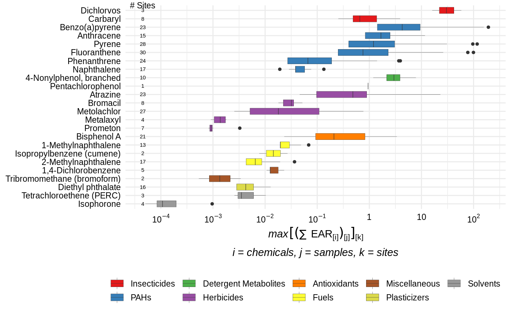
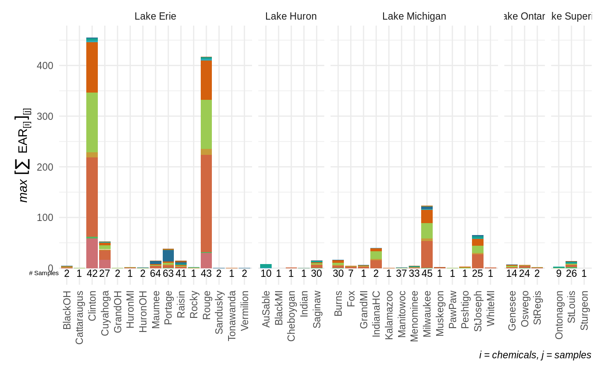
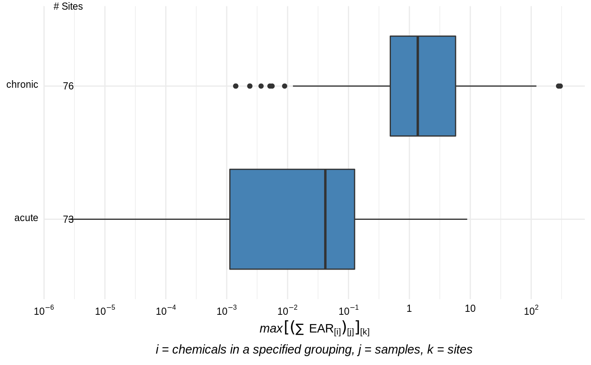
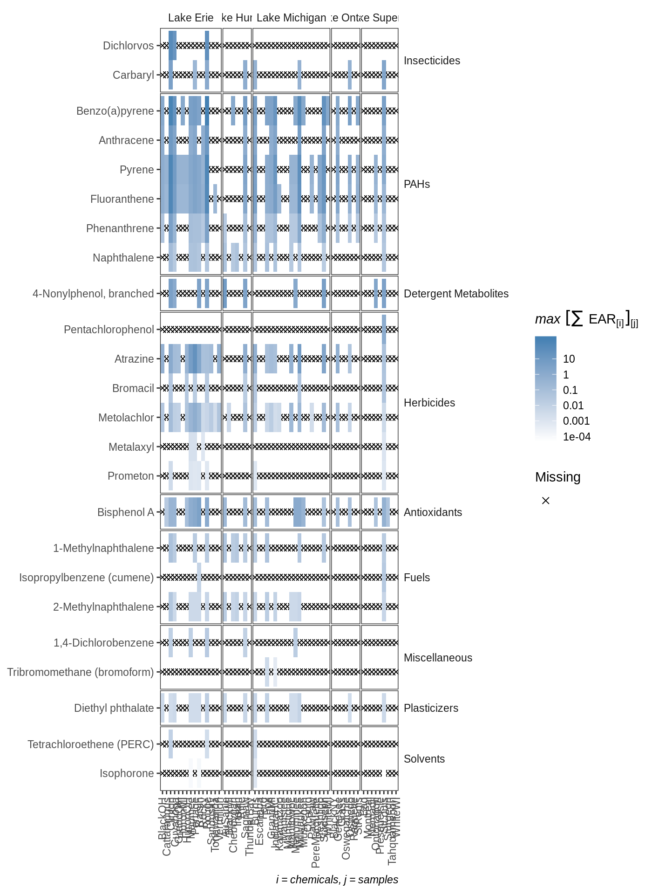

benchmarks.RmdThe majority of the examples in this documentation create EAR values from concentration “benchmarks” (concentrations of concern) set by the ToxCast database. Here we describe a way to export those benchmarks as well as a way to provide your own custom benchmark data.
Within the Shiny app, there is a button labeled “Download Benchmarks”. If you are navigating the app and find a set of conditions that make sense for your analysis, it is probably a good idea to create a record of the ToxCast ACC values.
Let’s use the data provided in the package to show an example of how to do this directly in R:
library(dplyr)
library(toxEval)
path_to_file <- file.path(system.file("extdata", package="toxEval"),
"OWC_data_fromSup.xlsx")
tox_list <- create_toxEval(path_to_file)
ACC <- get_ACC(tox_list$chem_info$CAS)
ACC <- remove_flags(ACC = ACC)
cleaned_ep <- clean_endPoint_info(end_point_info)
filtered_ep <- filter_groups(cleaned_ep)
benchmarks <- ACC %>%
filter(endPoint %in% filtered_ep$endPoint) %>%
rename(Value = ACC_value,
Chemical = chnm) %>%
left_join(filtered_ep, by = "endPoint")
names(benchmarks)## [1] "CAS" "flags" "endPoint" "ACC" "MlWt"
## [6] "Value" "Chemical" "groupCol" "assaysFull"The “benchmarks” data frame includes all the information you would need to reproduce the toxEval analysis in the future. This can be important if the ToxCast database is updated, yet you want to reproduce your original results.
The mandatory columns are: CAS, Value, groupCol, Chemical. Additional column can be included, but will be ignored by toxEval functions.
CAS: A character column defining the chemicals via their Chemical Abstracts Service (CAS) registry.
Chemical: A character column defining the name of the chemicals. This is necessary for labels because the only information toxEval uses by default for chemical names are the names assigned by the ToxCast database for an associated CAS.
endPoint: A character column naming the benchmark. This is analogous to the assay names in the ToxCast analysis.
Value: The concentration (in identical units as what is reported in the “Data” sheet) of the benchmark.
groupCol: A character column that groups endpoints. This is analogous to the Biological groupings from the ToxCast analysis.
This section describes how to use the “benchmarks” option to create a custom analysis.
The example data provided in toxEval is taken from the supplemental information in Baldwin, et al ((2016)[https://doi.org/10.1016/j.scitotenv.2016.02.137]). The third supplemental table provides water quality guideline benchmarks. We’ll provide that table here in a more user-friendly format, with associated CAS values. Please see Baldwin, et al ((2016)[https://doi.org/10.1016/j.scitotenv.2016.02.137]) for references to the values.
The following data can be copy/pasted into a csv file (the information between the single quotes), or run as R code as follows:
raw_benchmarks <- read.csv(text='CAS,chm_nm,source,value
120-12-7,Anthracene,EPA_acute,86.1
50-32-8,Benzo(a)pyrene,EPA_acute,3.98
206-44-0,Fluoranthene,EPA_acute,29.6
91-20-3,Naphthalene,EPA_acute,803
85-01-8,Phenanthrene,EPA_acute,79.7
129-00-0,Pyrene,EPA_acute,42
98-82-8,Isopropylbenzene (cumene),EPA_acute,2140
1912-24-9,Atrazine,EPA_acute,360
57837-19-1,Metalaxyl,EPA_acute,14000
87-86-5,Pentachlorophenol,EPA_acute,19
1610-18-0,Prometon,EPA_acute,98
63-25-2,Carbaryl,EPA_acute,0.85
2921-88-2,Chlorpyrifos,EPA_acute,0.05
333-41-5,Diazinon,EPA_acute,0.17
62-73-7,Dichlorvos,EPA_acute,0.035
84852-15-3,"4-Nonylphenol, branched",EPA_acute,28
120-12-7,Anthracene,EPA_chronic,20.7
50-32-8,Benzo(a)pyrene,EPA_chronic,0.014
206-44-0,Fluoranthene,EPA_chronic,7.11
91-20-3,Naphthalene,EPA_chronic,24
85-01-8,Phenanthrene,EPA_chronic,6.3
129-00-0,Pyrene,EPA_chronic,10.1
84-66-2,Diethyl phthalate,EPA_chronic,220
90-12-0,1-Methylnaphthalene,EPA_chronic,2.1
91-57-6,2-Methylnaphthalene,EPA_chronic,4.7
98-82-8,Isopropylbenzene (cumene),EPA_chronic,2.6
1912-24-9,Atrazine,EPA_chronic,60
57837-19-1,Metalaxyl,EPA_chronic,100
87-86-5,Pentachlorophenol,EPA_chronic,13
63-25-2,Carbaryl,EPA_chronic,0.5
2921-88-2,Chlorpyrifos,EPA_chronic,0.04
333-41-5,Diazinon,EPA_chronic,0.043
62-73-7,Dichlorvos,EPA_chronic,0.0058
84852-15-3,"4-Nonylphenol, branched",EPA_chronic,6.6
106-46-7,"1,4-Dichlorobenzene",EPA_chronic,15
75-25-2,Tribromomethane (bromoform),EPA_chronic,320
80-05-7,Bisphenol A,other_acute,1518
120-12-7,Anthracene,other_acute,13
50-32-8,Benzo(a)pyrene,other_acute,0.24
206-44-0,Fluoranthene,other_acute,3980
91-20-3,Naphthalene,other_acute,190
85-01-8,Phenanthrene,other_acute,30
84-66-2,Diethyl phthalate,other_acute,1800
90-12-0,1-Methylnaphthalene,other_acute,37
78-59-1,Isophorone,other_acute,117000
127-18-4,Tetrachloroethene (PERC),other_acute,830
63-25-2,Carbaryl,other_acute,3.3
2921-88-2,Chlorpyrifos,other_acute,0.02
106-46-7,"1,4-Dichlorobenzene",other_acute,180
75-25-2,Tribromomethane (bromoform),other_acute,2300
80-05-7,Bisphenol A,other_chronic,0.86
120-12-7,Anthracene,other_chronic,0.012
50-32-8,Benzo(a)pyrene,other_chronic,0.015
206-44-0,Fluoranthene,other_chronic,0.04
91-20-3,Naphthalene,other_chronic,1.1
85-01-8,Phenanthrene,other_chronic,0.4
129-00-0,Pyrene,other_chronic,0.025
84-66-2,Diethyl phthalate,other_chronic,110
90-12-0,1-Methylnaphthalene,other_chronic,2.1
91-57-6,2-Methylnaphthalene,other_chronic,330
78-59-1,Isophorone,other_chronic,920
127-18-4,Tetrachloroethene (PERC),other_chronic,45
1912-24-9,Atrazine,other_chronic,1.8
314-40-9,Bromacil,other_chronic,5
51218-45-2,Metolachlor,other_chronic,7.8
63-25-2,Carbaryl,other_chronic,0.2
2921-88-2,Chlorpyrifos,other_chronic,0.002
84852-15-3,"4-Nonylphenol, branched",other_chronic,1
106-46-7,"1,4-Dichlorobenzene",other_chronic,9.4
75-25-2,Tribromomethane (bromoform),other_chronic,320',
stringsAsFactors = FALSE)Looking at the “source” column, there are 4 distinct values: EPA_acute, EPA_chronic, other_acute, other_chronic. We have a few choices, we can keep each of those as an “endPoint”, or make the choices only acute/chronic, or even have the endPoints be EPA/other with acute/chronic groupings. In this example, we’ll show how to use this data to make a water quality benchmark analysis just based on the acute/chronic distinction. The “value” in the data above is already in \(\mu\)g/L, which matches up with our data. If the units were not aligned, the workflow would need to include converting the benchmark units to match whatever the data is reported in.
Essentially, the work that must be done is to rename some columns, and figure out how to classify the benchmarks. The following code uses the dplyr and tidyr packages for this:
library(tidyr)
bench <- raw_benchmarks %>%
rename(Value = value,
Chemical = chm_nm) %>%
separate(source, c("groupCol", "endPoint"), sep = "_")
head(bench)## CAS Chemical groupCol endPoint Value
## 1 120-12-7 Anthracene EPA acute 86.10
## 2 50-32-8 Benzo(a)pyrene EPA acute 3.98
## 3 206-44-0 Fluoranthene EPA acute 29.60
## 4 91-20-3 Naphthalene EPA acute 803.00
## 5 85-01-8 Phenanthrene EPA acute 79.70
## 6 129-00-0 Pyrene EPA acute 42.00Now we need to get that information into a “tox_list”. There are 2 options. The “bench” data frame can be exported to a text file, and that file could be input into the Excel file in the “Benchmarks” tab.
Alternatively, we can do it directly in R:
tox_list_wq_bench <- tox_list
tox_list_wq_bench[["benchmarks"]] <- bench
tox_list_wq_bench <- as.toxEval(tox_list_wq_bench)Then, we can use this new benchmark tox_list to generate our custom benchmark figures and tables.
summary_bench <- get_chemical_summary(tox_list_wq_bench)
plot_tox_boxplots(summary_bench, category = "Chemical")
plot_tox_stacks(summary_bench,
chem_site = tox_list_wq_bench$chem_site,
category = "Chemical", include_legend = FALSE)

